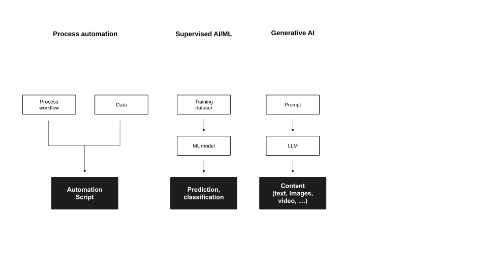

Agentic AI
Business Value Creation with IT/AI (BVC)
Neu-Ulm University of Applied Sciences
March 16, 2026
Learning objectives
After completing this unit, you will be able to:
- Explain human, collective, and artificial intelligence and their complementary strengths.
- Describe the evolution from rule-based agents to agentic AI systems and their key characteristics.
- Analyse how agentic AI creates and conditions business value in organisations.
- Design and evaluate human-AI collaboration considering governance, explainability, and accountability requirements.
- Reflect on the ethical and organisational implications of deploying autonomous AI systems.
Intelligence
Discussion
What is intelligence?
Definition
Intelligence is the ability to accomplish complex goals, learn, reason, and adaptively perform effective actions within an environment. Gottfredson (1997)
Or more concisely: think and act — humanly and/or rationally.
Human intelligence
Human intelligence “covers the capacity to learn, reason, and adaptively perform effective actions within an environment, based on existing knowledge. This allows humans to adapt to changing environments and act towards achieving their goals.” Dellermann et al. (2019, p. 632)
Sternberg et al. (1985) proposes three distinctive dimensions:
- Componential (analytica) intelligence — the ability to break down complex information and apply logical processes to find the most efficient solution
- Experiential (creative) intelligence — the ability to synthesize prior knowledge to navigate novel situations and automate new tasks
- Contextual (practical) intelligence — the ability to read environmental demands and adapt your behavior (or the environment) to achieve success
Cognitive architecture
Kahneman (2011) distinguishes two modes of human cognition:
- System 1: fast, automatic, intuitive
Efficient for routine decisions, but prone to bias and heuristic errors - System 2: slow, deliberate, effortful
Accurate for complex analysis, but resource-intensive and easily fatigued
Both modes have blind spots. AI augmentation can (under the right conditions) compensate for System 1 biases without overwhelming System 2 capacity.
Collective intelligence
Collective intelligence refers to “[…] groups of individuals acting collectively in ways that seem intelligent.” Malone (2015, p. 3)
The concept implies that under certain conditions, a (large) group of homogeneous individuals can outperform any single individual or even a single expert (Leimeister, 2010).
Today, research increasingly focuses on hybrid collective intelligence: connecting heterogeneous agents (e.g., humans and machines) so that they combine complementary intelligence and act more intelligently together (Malone, 2015).
Artificial intelligence
The term artificial intelligence describes systems that perform “[…] activities that we associate with human thinking, activities such as decision-making, problem solving, learning […]” Bellman (1978, p. 3)
AI can be defined as “[…] the art of creating machines that perform functions that require intelligence when performed by people […]” Kurzweil et al. (1990, p. 117)
The basic idea: systems that can analyse their environment, adapt to new circumstances, and act in ways that advance specified goals — without explicit programming for every situation.
Complementary strengths

Discussion
What can AI do — and what can’t it?
- Where does AI surpass humans?
- Where do humans surpass AI?
- Where should they work together?
Think individually for two minutes, then discuss with a partner.
06:00
Agent architectures
Rational agents

Performance measure
If we use, to achieve our purposes, a mechanical agency with those operations we cannot interfere once we have started it […] we had better be quite sure that the purpose built into the machine is the purpose which we really desire. Wiener (1960, p. 1358)
Formulating a performance measure correctly is difficult — and a reason to be careful.
Rationality vs. perfection
Rationality is not the same as perfection.
- Rationality maximizes expected performance.
- Perfection maximizes actual performance.
- Perfection requires omniscience.
- Rational choice depends only on the percept sequence to date.
Performance standards
To understand the engineering limits of AI, we distinguish between three standards:
| Metric | Definition | Info Requirement | Feasibility |
|---|---|---|---|
| Rationality | Maximizing expected performance | Percept sequence + prior knowledge | High: The engineering standard |
| Omniscience | Knowing the actual outcome of actions | Complete future and present data | Impossible: Requires a “crystal ball” |
| Perfection | Maximizing actual performance | Requires Omniscience | Impossible in unpredictable worlds |
Overcoming ignorance
To bridge the gap between initial ignorance and rational behavior, agents must utilize information gathering and learning.
Since agents lack omniscience, they must be designed to:
- Information gathering: take actions specifically to modify future percepts (e.g., looking both ways before crossing a street).
- Learning: modify their internal agent function based on experience to improve performance over time.
As the environment is usually not completely known a priori and not completely predictable, these are vital parts of rationality (Russel & Norvig, 2022, p. 59).
Simple reflex agents

Model-based reflex agents

Goal-based agents

Utility-based agents

Learning agents

Evolution of agents


Agentic AI
Definition
Agentic AI is an emerging paradigm in AI that refers to autonomous systems designed to pursue complex goals with minimal human intervention. Acharya et al. (2025, p. 18912)
Core characteristics
- Autonomy & goal complexity: handles multiple complex goals simultaneously; operates independently over extended periods
- Adaptability: functions in dynamic and unpredictable environments; makes decisions with incomplete information
- Independent decision-making: learns from experience; reconceptualizes approaches based on new information
Agentic AI vs. traditional AI
| Feature | Traditional AI | Agentic AI |
|---|---|---|
| Primary purpose | Task-specific automation | Goal-oriented autonomy |
| Human intervention | High (predefined parameters) | Low (autonomous adaptability) |
| Adaptability | Limited | High |
| Environment interaction | Static or limited context | Dynamic and context-aware |
| Learning type | Primarily supervised | Reinforcement and self-supervised |
| Decision-making | Data-driven, static rules | Autonomous, contextual reasoning |
Workflow patterns in agentic systems
Anthrophic (2024) discusses five key patterns for designing agentic AI workflows:
- Prompt chaining: output of one step becomes input to the next; creates complex multi-step reasoning flows
- Routing: directs tasks to specialised components based on type; improves efficiency through targeted processing
- Parallelisation: processes independent subtasks simultaneously; increases throughput
- Orchestrator-workers: central orchestrator delegates to specialised worker agents; manages coordination and integration
- Evaluator-optimizer: separate components generate, evaluate, and refine; enables iterative quality improvement
Workflow mapping exercise
Identify a process relevant to your project challenge.
Choose one process step from your project and work through these questions in pairs:
- Which workflow pattern (chaining, routing, parallelisation, orchestrator-workers, evaluator-optimizer) could structure this process?
- What would humans still need to do?
- Where is the risk of things going wrong?
10:00
Hybrid Intelligence
Concept
The idea is to combine the complementary capabilities of humans and computers to augment each other. Dellermann et al. (2019)
Definition
Hybrid intelligence is defined as the ability to achieve complex goals by combining human and artificial intelligence, thereby reaching superior results to those each of them could have accomplished separately, and continuously improving by learning from each other. Dellermann et al. (2019, p. 640)
Main characteristics:
- Collectively: tasks are performed jointly; activities are conditionally dependent
- Superior results: neither AI nor humans could have achieved the outcome without the other
- Continuous learning: all components of the socio-technical system learn from each other through experience
Distribution of roles

The Automation–augmentation paradox
Raisch & Krakowski (2021) argue that automation and augmentation are not opposing strategies — they are interdependent:
- Overemphasising automation (machines replacing humans) creates reinforcing cycles that erode human capability, ultimately making humans less able to provide value when it matters most
- Overemphasising augmentation (humans plus machines) can under-exploit AI capabilities and leave significant efficiency potential unrealised
Effective AI deployment requires holding both logics simultaneously, managing their tensions across time and space
The question is not “automate or augment?”
— but “when, where, and how to combine both?”
Managing AI
Berente et al. (2021) identify three interdependent dimensions that define the management challenge of AI systems:
- Autonomy: AI acts with progressively less human guidance; requires careful scoping of delegated decision authority
- Learning: AI behaviour changes over time through experience; creates challenges for quality control and accountability
- Inscrutability: AI reasoning is opaque; limits the ability to audit, explain, and correct decisions
These three dimensions interact: higher autonomy + higher inscrutability creates accountability gaps. Learning + higher inscrutability can produce invisible drift in system behaviour.
From tools to teammates
Seeber et al. (2020) highlight a fundamental shift in how AI systems are positioned in organisations:
| Traditional AI | AI as Teammates |
|---|---|
| Role: Tool to be used | Role: Active collaboration partner |
| Interaction: Responds to commands | Interaction: Engages proactively |
| Function: Task automation | Function: Complex problem-solving |
| Agency: Limited / directed | Agency: Autonomous with initiative |
| Integration: Technical system integration | Integration: Social & team integration |
Critical design areas
Seeber et al. (2020) identify three interconnected design areas for AI teammates:
- Machine artifact design: the AI system itself: appearance, capabilities, interaction modalities
- Collaboration design: how humans and AI work together: team composition, task allocation, workflows, communication protocols
- Institution design: the broader context: responsibility frameworks, liability, training requirements, governance structures
These areas are interdependent: decisions in one area constrain and shape the others. Effective design requires a holistic rather than purely technical approach.
Implications for hybrid intelligence
According to Peeters et al. (2021):
- Intelligence should be studied at the group level of humans and AI-machines working together — not at the level of individual components
- Increasing system intelligence means increasing the quality of interaction between components — not merely improving individual components
- Both human and artificial intelligence are shallow when considered in isolation
- No AI is an island — value emerges from the system, not the artefact
Value creation with Agentic AI
Revisiting the value chain
The IT value creation process (Soh & Markus, 1995):
IT investments only translate into performance if three linked processes work:
- IT conversion: IT expenditure lead to IT assets (requires appropriate conversion)
- IT use: IT assets create IT impacts (usage is the critical missing link)
- Competitive process: IT impacts foster organisational performance (depends on context and competitors)
When AI agents close the mising link (i.e., IT usage) — what changes?
Shifting the “missing link”
The shift from human use to agent action changes where value is created and where it can break down:
| Characteristic | Traditional IT | Agentic AI |
|---|---|---|
| Missing link | Human adoption & use | Agent design & governance |
| Risk | Non-adoption, misuse, workarounds | Misaligned objectives, invisible errors, drift |
| Remedy | Training, UX design, change mgmt | Careful design, monitoring, oversight structures |
| Value driver | Effective human behaviour | System-level performance & accountability |
AI-augmented decisions
Herath et al. (2024) derive seven evidence-based design principles from action design research across three business decision contexts:
- Transparent uncertainty communication: AI should signal its confidence, not just its recommendation
- Explainable reasoning paths: users need to understand why, not just what
- Scoped autonomy: AI should act autonomously only within well-defined task boundaries
- Human override capability: human judgment must remain exercisable at every stage
- Feedback integration: systems should learn from human corrections in near-real time
- Accountability anchoring: every AI decision output must be linked to a responsible human
- Context-sensitive presentation: recommendations should be tailored to the decision context, not generic
Valueable collaboration
Fügener et al. (2022) conducted experiments on human-AI prediction tasks and found:
Human-AI teams achieve superior performance only when AI delegates to humans — not vice versa.
Human metaknowledge, i.e., the ability to assess your own reliability in a specific context (“knowing what you know”), seems to be the critical variable:
- AI can assess its own certainty well and delegates effectively (even to low-performing humans) because it knows what it knows and what it doesn’t
- Humans, by contrast, lack metaknowledge: they cannot accurately judge their own reliability, leading to poor delegation decisions despite genuine willingness to collaborate
- This metaknowledge deficit is unconscious and cannot be explained by algorithm aversion — subjects tried to follow delegation strategies diligently and appreciated the AI support
The delegation paradox
Traditional AI design assumes “top-down” delegation: humans decide when to hand tasks to AI. However, empirical evidence suggests this is often ineffective (Fügener et al., 2022).
Why human delegation fails
- Humans cannot accurately assess their own reliability as they are systematically wrong about which cases they can handle, leading to poor delegation decisions.
- This failure is not caused by distrust of AI (i.e., AI aversion). Subjects tried to follow delegation strategies diligently and appreciated AI support, but their lack of self-knowledge undermined collaboration.
Why AI delegation works
- AI can assess its own certainty and effectively hand off difficult cases to humans. This improved performance even when the humans were low performers.
- Interfaces should support human self-assessment rather than relying on humans to calibrate their own reliance on AI naturally.
Context-dependence of value
Revilla et al. (2023) conducted a field experiment in retail demand forecasting. Their results reveal the conditionality of hybrid intelligence value:
| Context | Superior Strategy | Explanation |
|---|---|---|
| Short horizon, high uncertainty |
Automation (AI only) |
AI extracts signal from noise better; humans “tinker at the edges” and add bias |
| Long horizon, low uncertainty |
Augmentation (human + AI) |
AIML model is well-grounded; humans add contextual knowledge the algorithm misses |
| Short horizon, low uncertainty |
Adjustable automation | Some contextual knowledge helps, but short-horizon noise limits full augmentation benefit |
| Long horizon, high uncertainty |
Mixed | Long horizons favor human input, high uncertainty favors AI — effects partially offset |
There is no universal best practice. Task context determines optimal collaboration strategy.
Exercise
Where does agentic AI create value in your project?
Map your project’s core AI component to the IS business value matrix (Schryen 2013):
- Internal tangible: Cost reductions, productivity gains, efficiency improvements
- Internal intangible: Better decisions, improved capabilities, organisational learning
- External tangible: Revenue growth, market share, customer retention
- External intangible: Brand trust, customer satisfaction, reputation
Where is the primary value? Where are the risks? What conditions must hold?
10:00
Explainability & trust
Effective hybrid intelligence
Peeters et al. (2021) identify four properties that human-AI systems must exhibit for effective collaboration:
- Observability: an actor should make its status, knowledge of the team, task, and environment visible to collaborators
- Predictability: an actor should behave consistently so others can anticipate its actions when planning their own
- Explainability: agents should be capable of explaining their behaviour to collaborators
- Directability: collaborators should be able to re-direct each other’s behaviour when necessary
These properties enable calibrated trust (i.e., humans trusting AI appropriately): neither too much nor too little.
The XAI dilemma
Bauer et al. (2023) show that AI systems providing explanations (XAI) alongside predictions may:
- Draw users’ attention excessively to explanations that confirm prior beliefs (confirmation bias) rather than the prediction itself
- Diminish employees’ decision-making performance for the task at hand
- Lead individuals to carry over biased explanatory patterns to other domains
- Decrease individual-level noise (consistency increases) but increase systematic error
- Foster differences across subgroups with heterogeneous prior beliefs
Transparency ≠ better decisions.
How XAI is designed determines whether it helps or hurts.
Types of AI explanations
Different explanation types serve different cognitive needs (Miller, 2019; Wang et al., 2019):
- How explanations: describe the AI’s process:
“I used features X, Y, Z to reach this conclusion” - Why explanations: justify the AI’s reasoning:
“This is the dominant factor because …” - What-if explanations: counterfactual analysis:
“If feature X changed, the outcome would be …” - Confidence indicators: uncertainty communication:
“I am 73% confident in this recommendation”
The most effective explanation type depends on user expertise, time pressure, decision stakes, and potential for bias activation.
Designing for complementarity
Hemmer et al. (2025) identify the organisational factors that enable effective human-AI complementarity:
- Digital infrastructure: quality and accessibility of data and AI tools
- Governance mechanisms: clear rules for how AI outputs are used and overridden
- Change management: deliberate support for users adapting to hybrid workflows
- Trust calibration: training and feedback mechanisms that help users calibrate AI reliance
Optimal task allocation:
- AI automates easy tasks
- Augmentation on tasks of similar difficulty
- Humans handle difficult tasks alone.
AI affordances in teams
According to Dennis et al. (2023), AI agents provide three fundamental affordances to human teams:
- Communication support: coordination and reminders, review and feedback, delegation capabilities
- Information processing support: data cataloguing, search and retrieval, information analysis, content organisation
- Process structuring: planning and scheduling, task breakdown, delivery tracking, quality assurance
These affordances enable AI to contribute to team processes in ways that complement human team members and, thus, enable superior collective outcomes.
Governance & responsible AI
The stakes
As agentic AI systems act autonomously, safety and accountability are critical — not optional (Shavit et al., 2023).
Three compounding factors raise the stakes:
- Autonomy: systems act without direct human instruction; errors compound before detection
- Scale: agentic systems can act on thousands of cases before a human review cycle completes
- Opacity: inscrutability makes post-hoc attribution of errors difficult
The governance question is not “how do we prevent AI from making mistakes?” — but “how do we detect, correct, and account for mistakes when they inevitably occur?”
Practices for safe operation
Shavit et al. (2023) proposes a series of practices for the responsible deployment of agentic AI:
- Suitability assessment: evaluate whether the agent is appropriate for the specific task and context
- Scope limitation: restrict agent action to well-defined domains; require approval for consequential actions
- Default behaviour establishment: define explicit defaults for ambiguous situations
- Traceability: ensure all agent actions can be logged and attributed
- Automated monitoring: implement real-time anomaly detection
- Attributability: every action must be linkable to an accountable actor (human or system)
- Interruptibility: the agent must be stoppable; human control must be maintainable at all times
The principal-agent view
Jarrahi & Ritala (2025) apply principal-agent theory to reframe AI agents as delegated actors rather than autonomous systems:
- Principals (organisations, humans) delegate tasks to agents (AI systems) in exchange for performance
- The core problem: information asymmetry — agents have knowledge principals lack; interests may diverge
Three design principles follow:
- Guided autonomy: AI acts within principal-defined constraints, not freely
- Individualisation: AI behaviour adapts to the specific context and stakeholder
- Adaptability: AI can revise its approach as contexts change, within defined limits
This framing keeps accountability firmly with the principal — AI is an agent, not an autonomous actor with its own standing.
Responsible AI governance
Papagiannidis et al. (2025) identify a systematic gap between AI principles and AI governance:
- AI principles: high-level commitments: ethics, transparency, fairness, accountability, privacy
- Governance mechanisms: operational structures: oversight processes, accountability roles, audit procedures, escalation paths
Their framework spans four phases:
- Design phase: embed governance requirements into system architecture from the start
- Execution phase: operational oversight during deployment; exception handling protocols
- Monitoring phase: continuous tracking of system behaviour, performance drift, and error patterns
- Evaluation phase: periodic review of whether the system is meeting its intended purpose
Ethical dimensions
Agentic AI raises ethical questions that governance frameworks must address:
- Bias and fairness: AI trained on historical data can perpetuate and amplify existing inequalities; emergent effects at scale can be unforeseen (Peeters et al., 2021)
- Responsibility attribution: as AI acts more autonomously, the question of “who is responsible?” becomes harder — and more important
- Human agency: systems designed to reduce human effort may inadvertently reduce human capacity and meaningful judgment
- Regulatory context: EU AI Act: risk-based classification; high-risk AI systems require conformity assessment, human oversight, and transparency
Exercise
What governance does your project solution need?
- Suitability: Is agentic AI appropriate for this task? What are the risks of errors?
- Scope: What decisions should the agent never make autonomously?
- Accountability: Who is responsible for the agent’s outputs?
- Monitoring: How will you detect errors or unwanted behaviour?
- Override: Under what circumstances must a human be able to intervene?
10:00
Synthesis
An integrated model
Agentic AI creates value not through autonomy alone — but through thoughtful design of human-AI interaction and clear governance.
The key connections:
- Intelligence is complementary — neither humans nor AI alone are sufficient for complex, high-stakes tasks
- Agentic AI shifts the missing link from human adoption to system design and governance
- Hybrid intelligence is the productive frame — value emerges from the system, not the artefact
- Complementarity requires design across three levels: artifact, collaboration, and institution
- Governance is an enabling condition — without it, autonomy creates risk rather than value
Transfer to your projects
Three questions your project design must answer:
- Complementarity: What do humans contribute that your AI system cannot? How does the design ensure this contribution is made?
- Value: What IS business value does your solution create, and under what conditions does it actually materialise?
- Governance: Who is accountable for AI actions in your solution? How are errors detected, corrected, and attributed?
A solution that cannot answer all three questions is not ready for deployment, regardless of its technical performance.
Looking ahead
Multi-agent systems, foundation models as agents, and AI-to-AI coordination represent the next wave — raising the same questions of complementarity, value, and governance at a larger scale.
The concepts we have discussed today (hybrid intelligence, managed autonomy, responsible governance) are not specific to current AI technology. They are enduring frameworks for navigating the evolving boundary between human and machine capability.